| Larch: X-ray Data Analysis |
As with most Larch functions, each of the XAFS functions is designed to be able to act on arbitrary arrays of data to allow maximum flexibility in processing data. In addition, many of the Larch XAFS functions can write out several output values, including both scalaras and arrays. While flexible, this could get rather cumbersome, and mean that you would generally have to keep track of a large set of related arrays.
In Larch, it is most natural to put related data into a Group. This is often natural as data read in from a file is already held in a Group. If a set of XAFS data is held within a Group, then the Group members named energy and k and chi can be assumed to have the same standard meaning for all groups of XAFS Data. To make this most common usage easy, all of the XAFS functions follow a couple conventions for working more easily with Groups tht can work on arbitrary arrays of data, but assume that they will write output values to a Group. In addition, the XAFS functions can usually just be given a Group that follows the expected XAFS naming convention. This is not rigidly enforced, and is not exclusive (that is, you can add data with other names), but following the expected naming conventions will make processing XAFS data much easier.
The naming convention define a set of expected names and meaning for data arrays and scalars within a Group. This is summarized in the Table of Conventional Names for an XAFS Group below.
Table of Conventional Names for an XAFS Group These are the standard names for arrays and scalars for various data associated with XAFS, including FEFF calculations. Given are the name, the physical quantity described, and the name of function that will generate this value.
name type meaning created by energy array in eV
original data mu array 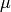 original data e0 scalar 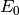 pre_edge(), find_e0() edge_step scalar 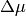 pre_edge() dmude array 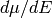 pre_edge() norm array normalized pre_edge() flat array flattened pre_edge() pre_edge array pre-edge curve pre_edge() post_edge array normalization curve pre_edge() bkg array autobk() chie array 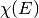 autobk() k array 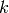 autobk() chi array 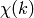 autobk() kwin array 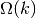 xftf(), ftwindow() r array xftf() chir array 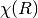 (complex) xftf() chir_mag array 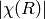 xftf() chir_re array 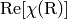 xftf() chir_im array 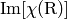 xftf() rwin array 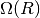 xftr() q array xftr() chiq array 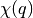 (complex) xftr() chiq_mag array 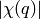 xftr() chiq_re array 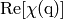 xftr() chiq_im array 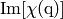 xftr()
where  , , and so on indicates back-transformed .
, , and so on indicates back-transformed .
The XAFS functions encourage following this convention, in that they are consistent in wanting to be represented by the two arrays GROUP.k and GROUP.chi
The XAFS functions need to write outputs to some group -- there are simply too many outputs to return and expect you to manage. So, all functions take a group argument, which is used as the group into which results are written. Again, this allows maximum flexibility, but gets tedious to provide this argument repeatedly when working with a particular data set.
There is also a special group, _sys.xafsGroup that is used as the default group to write outputs to if no group argument is supplied. When an an explicit group argument is given, _sys.xafsGroup is set to this group. This means that when working with a set of XAFS data all contained within a single group (which is expected to be the normal case), the group argument does not need to be typed repeatedly.
In addition to the _sys.xafsGroup convention above, there is an even simpler approach when working with Groups that follow the XAFS naming conventions. While the XAFS functions are generally meant to take arrays of data as the first two arguments, they allow the first argument to be a Group if that Group has the expected named arrays. This convention, known as the First Argument Group convention is worth understanding and using. For example, the autobk() function generally expects the first argument to be an array of energy values and the second to be an array of absorbance values. But a normal use case would look like:
autobk(dat.energy, dat.mu, group=dat, rbkg=1, ....)
This can be abbreviated as:
autobk(dat, rbkg=1, ....)
That is, as long as the Group dat follows the XAFS naming conventions (for autobk() that it has an energy array named energy and absorbance array named mu) the two forms above are equivalent. This nearly makes the Larch XAFS functions be object-oriented, or in this case, Group oriented.
Listed below are some general purpose functions for XAFS.
Convert photo-electron energy in eV to wavenumber in 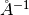. energies can be a single number or array of numbers.
Convert photo-electron wavenumber in ot energy in eV. wavenumber can be a single number or array of numbers.
An example use would be to print out a table of energies and values:
larch> kvals = linspace(0, 25, 26)
larch> evals = ktoe(kvals)
larch> for k,e in zip(kvals, evals)):
larch> print " %5.1f 1/Ang -> %8.2f eV" %(k , e)
larch> endfor
0.0 1/Ang -> 0.00 eV
1.0 1/Ang -> 3.81 eV
2.0 1/Ang -> 15.24 eV
3.0 1/Ang -> 34.29 eV
4.0 1/Ang -> 60.96 eV
5.0 1/Ang -> 95.25 eV
6.0 1/Ang -> 137.16 eV
7.0 1/Ang -> 186.69 eV
8.0 1/Ang -> 243.84 eV
9.0 1/Ang -> 308.61 eV
10.0 1/Ang -> 381.00 eV
11.0 1/Ang -> 461.01 eV
12.0 1/Ang -> 548.64 eV
13.0 1/Ang -> 643.89 eV
14.0 1/Ang -> 746.76 eV
15.0 1/Ang -> 857.25 eV
16.0 1/Ang -> 975.36 eV
17.0 1/Ang -> 1101.08 eV
18.0 1/Ang -> 1234.43 eV
19.0 1/Ang -> 1375.40 eV
20.0 1/Ang -> 1523.99 eV
21.0 1/Ang -> 1680.20 eV
22.0 1/Ang -> 1844.03 eV
23.0 1/Ang -> 2015.48 eV
24.0 1/Ang -> 2194.55 eV
25.0 1/Ang -> 2381.24 eV
Automatically estimate the noise level in a spectrum.
| Parameters: |
|
|---|
The method uses an XAFS Fourier transform, and many of arguments (kmin, kmax, etc) are identical to those of xftf().
This function follows the First Argument Group convention with arrarys named k and chi. The following outputs are written to the supplied group (or _sys.xafsGroup if group is not supplied):
attribute meaning epsilon_k estimated noise level in . epsilon_r estimated noise level in . kmax_suggest suggested highest value for which 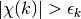
This method uses the high-R portion of (between rmin
and rmax) as a measure of the noise level in the data
and uses Parseval's theorem to convert this noise level to that in
. This method implicitly assumes that there is no signal in
the high-R portion of the spectrum, and that the noise in the spectrum is
"white" (independent of  ) . Each of these assumptions can be
legitimately questioned. Then again, making the assertion that these
assumptions are invalid and disregarding the estimated noise level here
would require knowledge of the noise in an XAFS spectrum that most users do
not have. At the very least, this estimate should be be interpreted as a
minimal estimate of the noise level in .
) . Each of these assumptions can be
legitimately questioned. Then again, making the assertion that these
assumptions are invalid and disregarding the estimated noise level here
would require knowledge of the noise in an XAFS spectrum that most users do
not have. At the very least, this estimate should be be interpreted as a
minimal estimate of the noise level in .
The estimate for the output value kmax_suggest has a tendency to be
pessimistic in how far out the data goes before being
dominated by noise, but has the advantage of being an impartial measure of
data quality. It is particularly pessimistic for extremely good data. Then
again, considering that the estimate for  is probably too
small, the estimate may not be that bad.
is probably too
small, the estimate may not be that bad.
de-convolves a normalized mu(E) spectra with a peak shape, enhancing separation of XANES features. This procedure can be unstable -- Use results with caution!
| Parameters: |
|
|---|
Follows the First Argument Group convention, using group members named energy and norm. The following data is put into the output group:
attribute meaning deconv array of deconvolved, normalized

 (in eV) to pass to
(in eV) to pass to